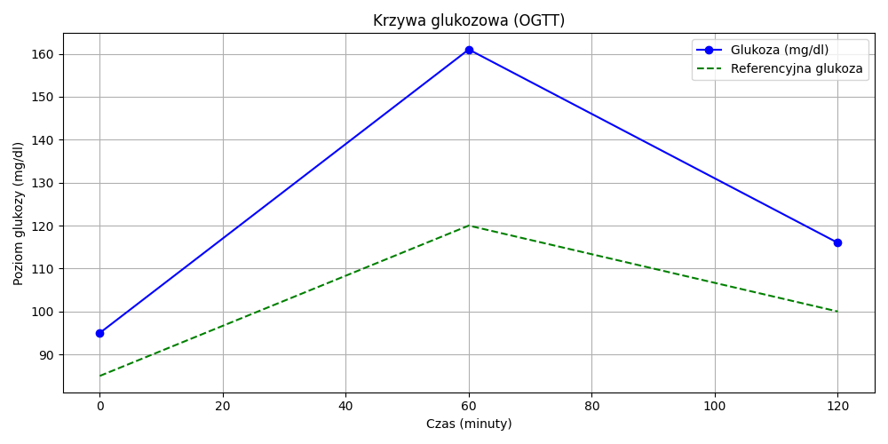
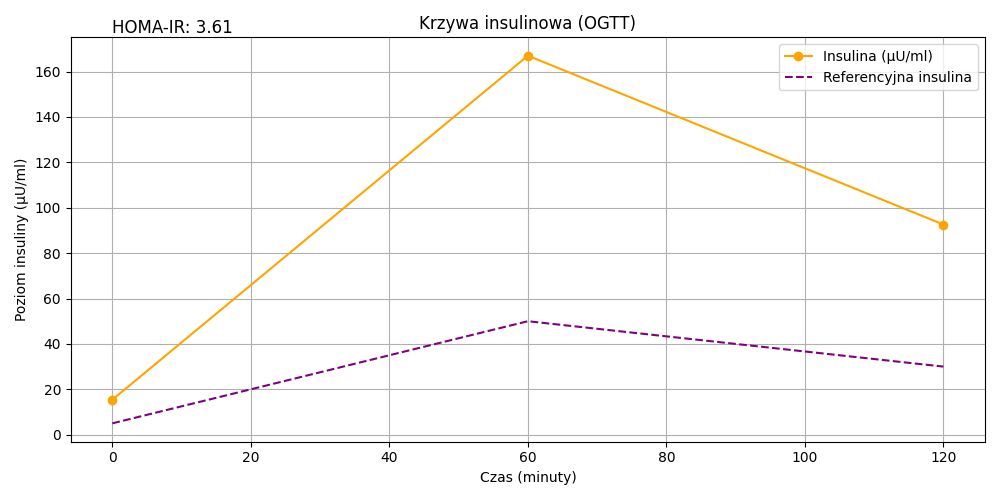

Diagnostyka
W tym wpisie dowiesz się jak wygląda proces rozpoznawania isnulinooporności. Jakie daje objawy, kiedy warto skonsultować się ze specjalistą, do kogo się udać i jakie badania wykonać.
Kiedy warto rozważyć badania?
Nasze ciało jest sprytne i w momencie gdy coś jest nie tak zaczyna wysyłać nam sygnały, które łatwo jest zignorować lub pomylić z czymś innym. Przy insulinooporności możemy doświadczać takich objawów jak: przewlekłe zmęczenie, senność zwłaszcza po posiłku, wahania nastroju, napady głodu czy nieustanna chęć sięgnięcia po coś słodkiego. Na pierwszy rzut oka wydają się błahe, lecz jeśli ich występowanie trwa dłuższy czas oraz nasila się po posiłkach wysokowęglowodanowych lub słodyczach warto zbadać ten temat.
Główne objawy insulinooporności to:
Przewlekłe zmęczenie i senność po posiłkach posiłkach to sygnał że organizm nie radzi sobie z metabolizowaniem glukozy, stąd nagły spadek energii mimo zjedzenia posiłku.
Trudności z redukcją masy ciałajeśli trzymasz dietę i jesteś w deficycie kalorycznym a mimo to a waga ani drgnie to może zwiastować zaburzenia hormonalne, przy insulinooporności często występuje też hiperinsulinemia czyli nadprodukcja insuliny. Nieużyta insulina odkłada się w postaci tkanki tłuszczowej, najczęściej w okolicach brzucha stąd może się brać popularna „oponka” .
Napady głodu i niekontrolowana ochota na słodycze przy rozregulowanej gospodarce hormonalnej narażeni jesteśmy na gwałtowne spadki poziomu glukozy, które powodują że nasz organizm traci siły i domaga się jedzenia, a w szczególności czegoś słodkiego co szybko podniesie poziom glikemii.
Problemy hormonalne insulinooporności często towarzyszą inne schorzenia, u kobiet może iść w parze zespół policystycznych jajników, więc jeśli zdiagnozowano u ciebie PCOS warto zbadać równieć ten temat
Cukrzyca lub IO w rodzinie insulinooporność tak samo jak cukrzyca mogą być dziedziczne, dlatego jeśli u twoich najbliższych zdiagnozowano, któreś z tych schorzeń może rozwinąć się również u Ciebie
To tylko kilka przykładów sytuacji, w których warto się zatrzymać i dać sobie przestrzeń na zadbanie o zdrowie. Wczesna diagnoza to szansa na skuteczne działanie i poprawę samopoczucia.
Jakie badania wykonać?
W diagnostyce insulinooporności podstawą jest wywiad z pacjentem, który zostanie uzupełniony o następujące badania:
- Insulinę na czczo
- Glukozę na czczo
- Krzywą glukozowo-insulinową (OGTT 75g) – badanie wykonywane z krwi, po pierwszym pobraniu na czczo należy wypić przygotowany przez pielęgniarkę w punkcie pobrań roztwór glukozy a następnie wykonać kolejne pobranie po 1 godzinie oraz po 2 od momentu wypicia glukozy
- Obliczenie wskaźnika HOMA-IR
Na badanie krzywej warto zapisać się na wczesną godzinę, gdyż spędzimy w punkcie pobrań co najmniej dwie godziny. Warto mieć przy sobie wodę. Roztwór glukozy jest bardzo słodki (w końcu to czysty cukier :)), niektórym osobom sprawia problem i powoduje nudności dlatego można zaopatrzyć się wcześniej w aptece we własny egzemplarz smakowy lub zapytać czy można do roztworu dolać kilka kropel cytryny. Informacje bywają sprzeczne, niektórzy nie widzą w tym problemu i sugerują takie rozwiązanie, a inni wręcz przeciwnie twierdzą że może to zaburzyć wyniki, dlatego warto skonsultować się z osobą w punkcie pobrań
Wskaźnik HOMA-IR to obliczony według wzoru stosunek poziomu glukozy do insuliny na czczo. Aktualne normy to wynik poniżej 2.5, powyżej tego możemy mieć już do czynienia z IO, a powyżej 4 bardziej zaawansowany stan. Wielu lekarzy korzysta z niego jako jeden z parametrów, inni twierdzą że nie jest on miarodajny i to przestarzała opinia. Warto go przeliczyć, ale pamiętaj, żeby na jego podstawie nie stawiać samo diagnozy tylko skonsultować się ze specjalistą, który zinterpretuje wszystkie wyniki badań.
Jak wygląda badanie OGTT?
Badanie krzywej OGTT przeprowadzane jest rano, na czczo, aby wyniki były jak najbardziej miarodajne. Na początku pacjentowi pobierana jest krew, aby zmierzyć poziom glukozy na czczo. Następnie pacjent wypija roztwór zawierający 75g glukozy, który wchłania się do krwiobiegu i wpływa na poziom cukru. Kolejne pobrania krwi następują po 1 godzinie oraz po 2 godzinach, aby sprawdzić, jak organizm reaguje na przyjętą glukozę.
Na podstawie tych wyników ocenia się, jak szybko organizm metabolizuje glukozę i jak efektywnie produkuje insulinę. Badanie to pozwala na zdiagnozowanie różnych zaburzeń, takich jak insulinooporność, stan przedcukrzycowy czy cukrzycę. Zmienność wyników po 1 i 2 godzinach pomaga określić, czy organizm ma problem z utrzymaniem prawidłowego poziomu glukozy we krwi.

Krzywa glukozowa (OGTT) trzypunktowa

Krzywa insulinowa (OGTT) trzypunktowa
Interpretacja wyników badań OGTT
Krzywa glukozowa (OGTT):
Na podstawie wyników krzywej glukozowej, możemy zauważyć, że na czczo poziom glukozy wynosi 95 mg/dl, co mieści się w granicach normy. Jednak po godzinie poziom glukozy wzrósł do 161 mg/dl, co jest znacznie powyżej wartości referencyjnej 120 mg/dl. Wartość ta mieści się w granicach tzw. nietolerancji węglowodanów (stan przedcukrzycowy). Po dwóch godzinach poziom glukozy spadł do 116 mg/dl, co jest bliskie wartości referencyjnej, ale nadal wyższe niż idealne 100 mg/dl. Taki przebieg wyników może wskazywać na insulinooporność — organizm ma trudności z prawidłowym metabolizowaniem glukozy, przez co poziom cukru we krwi przez dłuższy czas pozostaje podwyższony.
Krzywa insulinowa (OGTT):
Podobnie jak w przypadku glukozy, wyniki pomiarów insuliny również wskazują na nieprawidłowości. Poziom insuliny na czczo wynosi 16 µU/ml, co mieści się w granicach normy (od 5 do 50 µU/ml). Jednak już po godzinie, poziom insuliny wzrasta do 168 µU/ml, co jest znacznie wyższe niż wartość referencyjna 50 µU/ml. Tak wysoki poziom insuliny wskazuje na insulinooporność, gdzie organizm stara się wyrównać wysokie poziomy glukozy, wydzielając coraz więcej insuliny. Po dwóch godzinach poziom insuliny spadł do 93 µU/ml, co nadal jest ponad dwukrotnie wyższe od wartości referencyjnej, co potwierdza, że organizm nie radzi sobie z prawidłową regulacją insuliny.
Co to oznacza?
Na podstawie tych wyników można zauważyć, że chociaż poziom glukozy po dwóch godzinach zbliża się do normy, to wciąż jest wyższy niż w przypadku zdrowej osoby. Dodatkowo, bardzo wysokie poziomy insuliny wskazują na insulinooporność — stan, w którym organizm nie jest w stanie skutecznie reagować na insulinę, co może prowadzić do rozwoju cukrzycy typu 2, jeśli nie podejmie się odpowiednich działań.
Wskaźnik HOMA-IR:
Na podstawie wyników badań można także obliczyć wskaźnik HOMA-IR, który mierzy poziom insulinooporności. Wartość HOMA-IR powyżej 2.5 sugeruje obecność insulinooporności, a w przypadku wartości powyżej 4 może świadczyć o zaawansowanej insulinooporności.
Warto dodać, że zakresy referencyjne dla HOMA-IR zmieniały się na przestrzeni lat. Kiedyś mówiło się, że wartość HOMA-IR poniżej 1 jest w normie, a wartości powyżej 1 wskazują na insulinooporność. Obecnie uznaje się, że wartość powyżej 2.5 jest już wyraźnym sygnałem insulinooporności, a wartości przekraczające 4 sugerują bardziej zaawansowany stan.
Kalkulator HOMA-IR
Co zrobić po wykonaniu badań?
Po otrzymaniu wyników należy skonsultować się z lekarzem, może to być lekarz internista który ewentualnie skieruje do innego specjalisty lub bezpośrednio do diabetologa lub endokrynologa. Lekarz postawi ostateczną diagnozę oraz wskaże plan leczenia, przedstawi zasady jakimi należy się kierować, jeśli to konieczne przepisze leki.
Jeśli kwestia zorganizowania odpowiedniej diety stanowi dla Ciebie problem lub masz jeszcze inne schorzenia i nie wiesz jak to połączyć warto skorzystać z usług dietetyka. Pomoże on w ułożeniu jadłospisu z uwzględnieniem wszystkich zaleceń, ale zadba również o to aby dieta była zbilansowana i smaczna tak aby wytrwać w niej na stałe.